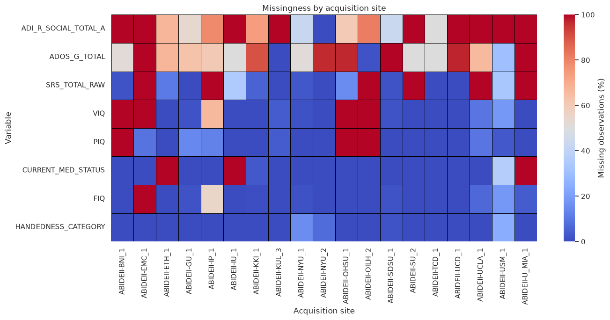
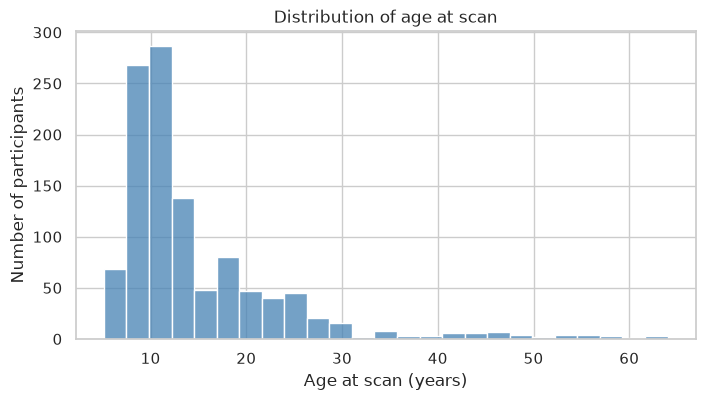
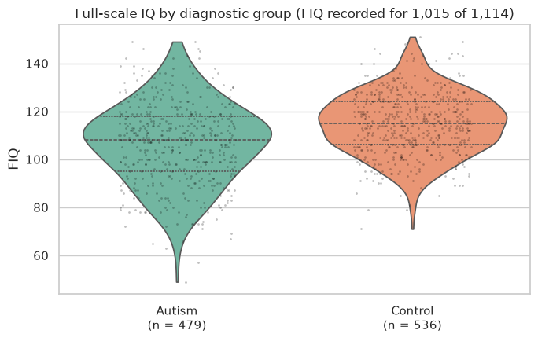
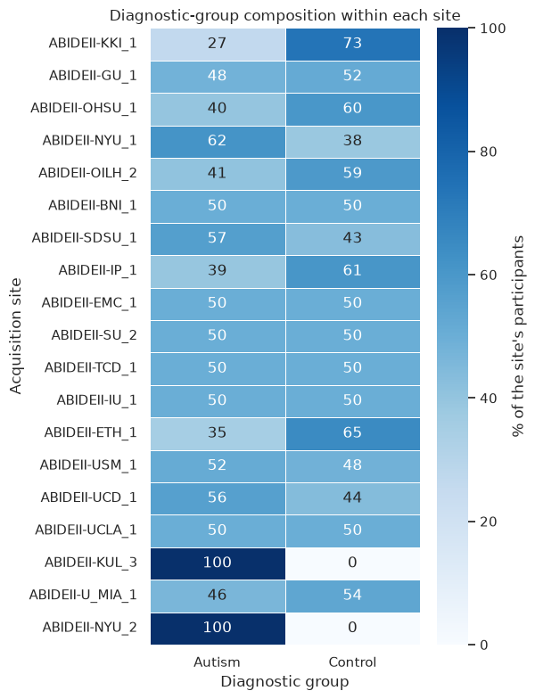
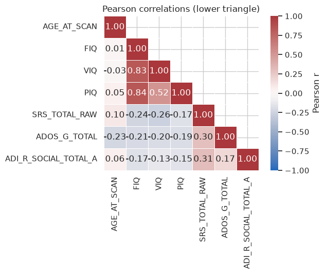

Exercise 1 — Exploratory data analysis (EDA)#
This exercise applies exploratory data analysis (EDA) to the phenotypic table of the Autism Brain Imaging Data Exchange II (ABIDE-II). We inspect the table’s structure, convert coded variables to categories, quantify and reason about missing data, describe and compare distributions, and read correlations together with the sample size behind each number. The aim is not a predictive model but a defensible understanding of the data before any modelling begins.
Run or download this notebook
This page is fully readable as it is, and the interactive activities work here in the browser. To run or change the Python code, use the portable version of the notebook:
View or download the portable
.ipynbfor VS Code or Jupyter
The portable notebook keeps every Python analysis cell and swaps the four embedded activities for links back to this page.
What this notebook covers#
Importing and data loading — a small curated slice of the ABIDE-II phenotypic table.
Data inspection — comparing
head(),tail(), andsample(), and spotting categories that are stored as numbers.Statistical inspection —
info()anddescribe(), and their blind spots.Missing values — quantifying missingness, its pattern across sites and diagnosis, and strategies for handling it (with the complete-case retention explorer).
Distributions and feature correlations — reading one distribution, comparing across groups, and Pearson/Spearman correlations (with the correlation explorer).
Prerequisites: basic Python and a first acquaintance with pandas,
matplotlib, and seaborn. Run the cells in order from the top; the data is
read from a pinned public URL, so the first run needs internet access.
1. Importing and data loading#
Loading the ABIDE-II phenotypic data
The Autism Brain Imaging Data Exchange II (ABIDE-II) combines neuroimaging and phenotypic data collected across 19 international research sites. The full phenotypic table has 348 variables — demographics, diagnostic assessments, cognitive scores, behavioral questionnaires, and acquisition-related fields.
For this exercise we use a deliberately small curated slice: 13 columns covering identifiers, core demographics, diagnosis, a few cognitive scores, and a couple of autism-assessment totals. The meaning and coding of every variable are documented in the official ABIDE-II Phenotypic Data Legend.
Some variables are recorded for nearly every participant; others were collected only at particular sites or for particular participant groups.
2. Data inspection#
Before computing any statistic, it is worth looking at a few individual rows. This shows how the table is organised, how each variable is represented, and whether anything looks unexpected.
pandas offers several ways to pull out rows to look at:
phenotypes.head(n)— the firstnrows;phenotypes.tail(n)— the lastnrows;phenotypes.sample(n)—nrows chosen at random;a custom selection — particular rows, evenly spaced rows, or rows that meet a condition.
Which of these gives the most useful first impression of a table? The activity below lets you compare them on this dataset before we draw any conclusion.
The comparison below runs entirely in your browser — no Python kernel — so
it also works on the published course page. Switch between head(),
tail(), and sample(), change the number of rows, and watch the summary
line: how many acquisition sites appear, and how many cells are missing, in
each view?
Think first
Compare the three views at the same row count.
For
head()and fortail(), how many acquisition sites appear? What does that tell you about how the table is ordered?Switch to
sample(). How many sites appear now, and how does the number of missing cells compare withhead()andtail()?Which view would you trust more for a first, broad impression of the whole dataset — and what is the one thing a small random sample still cannot promise you?
head() and tail() are deterministic: they always return the same
rows, which makes them the right tool for checking the column layout, the
data types, and how the table is sorted. In this table the rows are grouped
by acquisition site, so head() and tail() each land inside a single
site.
sample() draws rows from across the whole table, so in an ordered,
multi-site table like this one it usually shows a wider spread of sites and
a more representative mix of missing and recorded values. It is still only a
sample, though: a handful of rows is not guaranteed to reflect the full
dataset, and a different random draw would show different participants.
Passing random_state just makes one particular draw reproducible.
The cell below is the Python code for each of these three sampling methods — run it yourself, and try changing n or random_state. It is here to show the code, not three more result tables to study: the activity above already compares what the methods return.
# Code to display each sampling method. head() and tail() are
# deterministic; sample() draws rows at random, and passing random_state
# makes one particular draw reproducible. Change n or random_state and
# re-run to see what changes.
from IPython.display import display
n = 8
display(phenotypes.head(n))
display(phenotypes.tail(n))
display(phenotypes.sample(n, random_state=0))
Think first
Look at the rows and the column names in the views above before continuing.
What does each row represent?
Which variables are categorical?
Remember that categorical variables are not necessarily stored as text. Some categories may be represented using numerical codes.Are there variables or participants that already look problematic?
Answer before inspecting the complete data summary.
3. Statistical inspection#
Looking at individual rows helps us understand the structure of a dataset, but it does not summarize the dataset as a whole. Pandas provides two useful starting points:
DataFrame.info()summarizes the dataset’s structure and data types.DataFrame.describe()calculates descriptive statistics for each variable.
These methods answer different questions and should usually be used together.
Dataset structure with info()#
info() reports:
the number of rows and columns;
each column’s data type;
the number of non-missing observations;
an estimate of memory usage.
It is the quick way to check the shape, the data types, and the non-null counts, and to spot a variable stored as an unexpected type — but it says nothing about the distribution of the values inside a column.
phenotypes.info()
<class 'pandas.DataFrame'>
RangeIndex: 1114 entries, 0 to 1113
Data columns (total 13 columns):
# Column Non-Null Count Dtype
--- ------ -------------- -----
0 SITE_ID 1114 non-null str
1 SUB_ID 1114 non-null int64
2 DX_GROUP 1114 non-null int64
3 AGE_AT_SCAN 1114 non-null float64
4 SEX 1114 non-null int64
5 HANDEDNESS_CATEGORY 1091 non-null float64
6 FIQ 1015 non-null float64
7 VIQ 799 non-null float64
8 PIQ 872 non-null float64
9 CURRENT_MED_STATUS 991 non-null float64
10 SRS_TOTAL_RAW 785 non-null float64
11 ADOS_G_TOTAL 347 non-null float64
12 ADI_R_SOCIAL_TOTAL_A 302 non-null float64
dtypes: float64(9), int64(3), str(1)
memory usage: 113.3 KB
Think first
Examine the output of phenotypes.info().
How many participants and variables are present?
Which variables contain missing observations?
Are any categorical variables stored as numbers/strings?
Numerical summaries with describe()#
By default, describe() summarizes numerical columns. Its output includes:
count: number of non-missing observations;mean: arithmetic mean;std: sample standard deviation;minandmax: smallest and largest observed values;25%,50%, and75%: quartiles of the distribution.
Transposing the output (using .T) places variables in rows, which is often easier to read.
describe() summarises the distribution of each numeric variable, but a single row of numbers can hide differences between groups or sites, and the count column is the reminder that each statistic is computed only from the observations that are actually present.
phenotypes.describe().T
# And for the categorical variables you can use:
# phenotypes.describe(include=["category"]).T
| count | mean | std | min | 25% | 50% | 75% | max | |
|---|---|---|---|---|---|---|---|---|
| AGE_AT_SCAN | 1114.0 | 14.864374 | 9.161864 | 5.128 | 9.296575 | 11.503593 | 18.0 | 64.0 |
| FIQ | 1015.0 | 111.023645 | 15.482364 | 49.000 | 101.000000 | 112.000000 | 122.0 | 151.0 |
| VIQ | 799.0 | 112.143930 | 16.415442 | 45.000 | 101.000000 | 112.000000 | 124.0 | 156.0 |
| PIQ | 872.0 | 108.342890 | 15.989322 | 53.000 | 98.000000 | 109.000000 | 119.0 | 149.0 |
| SRS_TOTAL_RAW | 785.0 | 55.275159 | 42.868608 | 0.000 | 16.000000 | 43.000000 | 92.0 | 199.0 |
| ADOS_G_TOTAL | 347.0 | 9.536023 | 4.723664 | 0.000 | 7.000000 | 10.000000 | 13.0 | 23.0 |
| ADI_R_SOCIAL_TOTAL_A | 302.0 | 18.894040 | 5.925509 | 0.000 | 15.000000 | 19.000000 | 23.0 | 30.0 |
Think first
Use the output above to answer the following questions.
Which variables have the most missing data?
Find one variable for which the mean and median differ noticeably. What might cause this difference?
Do any minimum or maximum values appear biologically or clinically surprising?
Why is calculating a mean for
DX_GROUPorSEXusually not meaningful?Could two variables have identical means and standard deviations but very different distributions?
4. Missing values#
A missing value indicates that no usable value is available for a particular participant and variable.
In pandas, missing values are usually represented as NaN or <NA>.
A measurement may be missing because it was not collected, was not applicable, failed quality control, or was unavailable at a particular acquisition site.
Before deciding how to handle missing values, we should ask:
How much data is missing?
Which variables and participants are affected?
Is the missingness associated with site, diagnosis, or another variable?
Which variables are actually required for our analysis?
Quantifying missing values#
missing_summary = pd.DataFrame(
{
"n_missing": phenotypes.isna().sum(),
"percent_missing": phenotypes.isna().mean() * 100,
}
).sort_values("percent_missing", ascending=False)
missing_summary.query("n_missing > 0").round(1)
| n_missing | percent_missing | |
|---|---|---|
| ADI_R_SOCIAL_TOTAL_A | 812 | 72.9 |
| ADOS_G_TOTAL | 767 | 68.9 |
| SRS_TOTAL_RAW | 329 | 29.5 |
| VIQ | 315 | 28.3 |
| PIQ | 242 | 21.7 |
| CURRENT_MED_STATUS | 123 | 11.0 |
| FIQ | 99 | 8.9 |
| HANDEDNESS_CATEGORY | 23 | 2.1 |
The percentage of missing observations is calculated separately for each variable:
A large percentage does not automatically mean that a variable should be removed. A sparsely measured variable could still be scientifically important.
Think first
Which variables contain no missing values?
Which variables have more than 50% missing observations?
Would you automatically remove a variable because it has more than 50% missing data? Why or why not?
Does this table tell us why the values are missing?
Is missingness distributed randomly?#
ABIDE-II combines data from multiple research sites. Different sites may have administered different questionnaires or used different assessment procedures.
Consequently, missingness may be related to the acquisition site. If so, removing incomplete observations could change the representation of sites in the dataset.

Think first
Interpret the heatmap.
Is missingness approximately equal across acquisition sites?
Can you identify assessments that appear to have been collected only at particular sites?
What would happen to the representation of sites if we retained only complete participants?
Could acquisition site be related to both missingness and diagnosis?
Design a complete-case dataset#
Suppose we want to construct an analysis table containing only participants with complete data for a selected set of core variables.
Use the missingness heatmap to choose the variables that you consider essential. The tool reports how many participants remain and whether participant retention differs across acquisition sites.
There is no universally correct set of core variables: the choice must follow the research question.
Complete-case retention explorer#
The tool below runs entirely in your browser — it needs no Python kernel, so it also works on the published course website. Tick the variables you would treat as essential for an analysis. A participant is kept only if every ticked variable is recorded for them; the summary and the chart update immediately, overall and for each acquisition site.
Your decision#
Construct two possible analysis datasets:
A minimal dataset retaining as many participants as possible.
A richer dataset containing additional behavioral information.
For each selection, record:
the selected variables;
the number of retained participants;
whether retention differs between sites;
which scientific information was sacrificed.
Which dataset would you use to investigate relationships between demographic variables and diagnosis? Would the same selection be appropriate for studying symptom severity?
Check your reasoning — heatmap Q4
Missingness can also depend on diagnosis. For example, some autism-specific assessments may have been administered primarily to participants in the autism group.
| DX_GROUP | 1 | 2 |
|---|---|---|
| ADI_R_SOCIAL_TOTAL_A | 42.0 | 100.0 |
| ADOS_G_TOTAL | 42.2 | 92.2 |
| SRS_TOTAL_RAW | 27.4 | 31.4 |
| VIQ | 25.3 | 30.9 |
| PIQ | 21.1 | 22.3 |
| CURRENT_MED_STATUS | 10.0 | 12.0 |
| FIQ | 8.1 | 9.6 |
| HANDEDNESS_CATEGORY | 2.9 | 1.3 |
Common approaches to missing data#
There is no single correct method for handling every missing value. What matters most is why the values are missing and what the analysis needs to do.
Approach |
When it is useful |
Main caution |
|---|---|---|
Remove incomplete rows or a whole variable |
Little data is lost, and the missingness is plausibly unrelated to the question |
Shrinks the sample and can bias it if the missingness is not random |
Impute the missing values — simple (mean / median / mode), model-based (e.g. KNN), or multiple imputation |
A complete table is required and other variables carry enough information to estimate the gaps |
Understates uncertainty and can weaken or distort relationships; parameters must be learned from training data only |
Keep missingness explicit — a missing-indicator, an explicit “not recorded” category, or a method that accepts missing data |
The fact that a value is missing may itself be informative |
The model may learn the data-collection procedure (e.g. which site) rather than the biology |
The missingness mechanism and the goal of the analysis decide the choice; no one strategy is always best.
Removing incomplete observations#
The simplest approach is complete-case deletion: retain only rows that have values for every required variable.
This curated table has 13 variables, and two of them — the ADOS-G and ADI-R totals — were collected for only part of the sample.
Predict before running: how many participants do you expect would remain if we required complete data for all 13 variables?
| dataset | n_participants | percent_retained | |
|---|---|---|---|
| 0 | Original dataset | 1114 | 100.0 |
| 1 | Complete for all 13 variables | 95 | 8.5 |
| 2 | Complete for selected core variables | 1015 | 91.1 |
Think first
Why can requiring complete data for all variables remove almost every participant?
Why is deletion based on a specific analysis subset more reasonable?
Could the retained participants differ systematically from the excluded participants?
What should be checked before concluding that complete-case deletion is safe?
Imputing a numerical variable#
Imputation replaces missing observations with estimated values. As a simple example, we replace missing FIQ values with the median observed FIQ, working on a copy so that the original dataframe is unchanged.
Here the median is computed from every observed value, which is fine for a one-off illustration. In a real modelling pipeline the median would be learned from the training split only and then applied to the validation and test data; computing it from the whole dataset first lets information from the held-out participants leak into preprocessing. The end of this section returns to this point.
imputation_demo = phenotypes[
["SUB_ID", "SITE_ID", "DX_GROUP", "AGE_AT_SCAN", "SEX", "FIQ"]
].copy()
imputation_demo["FIQ_was_missing"] = imputation_demo["FIQ"].isna()
fiq_median = imputation_demo["FIQ"].median()
imputation_demo["FIQ_imputed"] = imputation_demo["FIQ"].fillna(fiq_median)
print(f"Median FIQ used for imputation: {fiq_median:.1f}")
print(f"Number of imputed observations: {imputation_demo['FIQ_was_missing'].sum()}")
Median FIQ used for imputation: 112.0
Number of imputed observations: 99
pd.DataFrame(
{
"Original FIQ": imputation_demo["FIQ"].describe(),
"Median-imputed FIQ": imputation_demo["FIQ_imputed"].describe(),
}
).round(2)
| Original FIQ | Median-imputed FIQ | |
|---|---|---|
| count | 1015.00 | 1114.00 |
| mean | 111.02 | 111.11 |
| std | 15.48 | 14.78 |
| min | 49.00 | 49.00 |
| 25% | 101.00 | 103.00 |
| 50% | 112.00 | 112.00 |
| 75% | 122.00 | 120.00 |
| max | 151.00 | 151.00 |
Important limitation
Median imputation solves the computational problem of missing values, but it does not reconstruct the unobserved measurements.
It introduces a concentration of observations at the median, usually reduces the estimated variance, and can weaken relationships between FIQ and other variables.
Imputing 99 of 1,114 FIQ values at the median leaves the mean almost unchanged and lowers the standard deviation only slightly, because the share of imputed rows is small. The effect grows with the fraction of missing data and with how far the imputed constant sits from the rest of the distribution — and, as the dropdown above notes, it always removes genuine variability and weakens relationships with other variables.
Handling missing categories#
For a categorical variable, possible approaches include:
replacing missing values with the most frequent category;
creating an explicit category such as
"Not recorded";excluding the variable or incomplete participants.
An explicit missing category is useful when the absence of a value may itself be informative. However, it may also allow a model to learn differences between sites or data-collection procedures.
imputation_demo["CURRENT_MED_STATUS"] = phenotypes["CURRENT_MED_STATUS"]
imputation_demo["CURRENT_MED_STATUS_filled"] = (
imputation_demo["CURRENT_MED_STATUS"]
.astype("object")
.fillna("Not recorded")
.astype("category")
)
imputation_demo[
["CURRENT_MED_STATUS", "CURRENT_MED_STATUS_filled"]
].value_counts(dropna=False)
CURRENT_MED_STATUS CURRENT_MED_STATUS_filled
0.0 0.0 824
1.0 1.0 167
nan Not recorded 123
0.0 1.0 0
Not recorded 0
1.0 0.0 0
Not recorded 0
nan 0.0 0
1.0 0
Name: count, dtype: int64
Think first
Suppose medication status is missing mainly at one acquisition site. What might a classification model learn from the "Not recorded" category?
Check your reasoning
The model may use "Not recorded" as an indirect indicator of acquisition site.
If site composition also differs between diagnostic groups, the model could appear to predict diagnosis while partly learning where the participant was scanned.
Common approach:#
For the exploratory analysis (as done here), we will not immediately impute or delete all missing values. Instead, we will:
preserve the original phenotype table;
report the available sample size for each variable;
examine whether missingness differs by site or diagnosis;
select variables according to the specific analysis;
perform deletion or imputation only when required.
For later machine-learning analyses, imputation parameters must be estimated using the training data only. Calculating an imputation value from the complete dataset before cross-validation would allow information from the test participants to influence preprocessing and would constitute data leakage.
5. Distributions and feature correlations#
Summary statistics describe variables using only a few numbers. Visualizing their distributions can reveal information that the mean and standard deviation may hide, including:
skewness;
multiple peaks;
restricted ranges;
unusual observations;
differences between participant groups.
We will first examine individual variables and then investigate relationships between features.
Explore numerical distributions#
A histogram divides the observed range into intervals called bins and counts the observations within each interval.
The choice of bin width matters. Too few bins can hide important structure, while too many bins can make random variation appear meaningful.
Use the controls below to select a variable and change the number of histogram bins.
Before changing the controls, predict:
What information will disappear when very few bins are used?
What happens when the number of bins becomes very large?
Will the same number of bins be suitable for age, IQ, and questionnaire scores?
The histogram below runs entirely in your browser. It needs no Python kernel, so it also works on the published course website.
The same basic plot can be produced in Python with the notebook’s existing dataframe and plotting stack.

Think first
Choose at least three variables.
Which distribution is most symmetric?
Which distribution appears most skewed?
Which variables are discrete scores rather than continuous measurements?
Did changing the number of bins alter your interpretation?
For which variable was the KDE curve potentially misleading?
Reading a distribution#
A histogram or density plot answers questions that a mean and a standard deviation cannot:
Center and spread — where do typical values sit, and how far do they range?
Skew — is one tail much longer than the other? A long right tail pulls the mean above the median.
Multiple peaks — could the sample be a mixture of groups measured on different scales or instruments?
Floor and ceiling effects — do many observations pile up at the lowest or highest possible score?
Implausible values — are there observations outside the range the measurement can take?
The interactive histogram already showed that the number of bins changes how a distribution looks, not what was actually observed. The same 1,114 rows are being drawn each time; only the summary changes.
The table below reports describe() together with the available and missing sample size for a small set of variables that behave differently from one another.
# A deliberately short set: an age variable, a cognitive score, and two
# autism-assessment totals with very different completeness.
summary_variables = ["AGE_AT_SCAN", "FIQ", "SRS_TOTAL_RAW", "ADOS_G_TOTAL", "ADI_R_SOCIAL_TOTAL_A"]
distribution_summary = phenotypes[summary_variables].describe().T[
["mean", "std", "min", "25%", "50%", "75%", "max"]
]
distribution_summary["available_n"] = phenotypes[summary_variables].notna().sum()
distribution_summary["missing_n"] = phenotypes[summary_variables].isna().sum()
distribution_summary.round(1)
| mean | std | min | 25% | 50% | 75% | max | available_n | missing_n | |
|---|---|---|---|---|---|---|---|---|---|
| AGE_AT_SCAN | 14.9 | 9.2 | 5.1 | 9.3 | 11.5 | 18.0 | 64.0 | 1114 | 0 |
| FIQ | 111.0 | 15.5 | 49.0 | 101.0 | 112.0 | 122.0 | 151.0 | 1015 | 99 |
| SRS_TOTAL_RAW | 55.3 | 42.9 | 0.0 | 16.0 | 43.0 | 92.0 | 199.0 | 785 | 329 |
| ADOS_G_TOTAL | 9.5 | 4.7 | 0.0 | 7.0 | 10.0 | 13.0 | 23.0 | 347 | 767 |
| ADI_R_SOCIAL_TOTAL_A | 18.9 | 5.9 | 0.0 | 15.0 | 19.0 | 23.0 | 30.0 | 302 | 812 |
Think first
Read the summary.
Use the table above.
For
SRS_TOTAL_RAWthe mean (about 55) is well above the median (43). Sketch the distribution shape this implies, then check it with the interactive histogram.ADOS_G_TOTALandADI_R_SOCIAL_TOTAL_Aeach have fewer than 350 available observations. Does the small sample make their mean wrong, or does it make it uncertain and possibly unrepresentative? These are different problems.Which of these variables are discrete (a small set of integer scores) rather than continuous?
Check your reasoning
Mean above median means a right skew: most participants score low, a minority score much higher, and the long upper tail drags the mean up. The interactive histogram shows a tall block near zero with a spread-out tail.
It makes the mean uncertain and potentially biased. The value is computed correctly, but it describes only the sub-sample that was measured. If the ADOS-G or ADI-R was collected mainly for particular participants, that sub-sample need not resemble the whole cohort.
ADOS_G_TOTALandADI_R_SOCIAL_TOTAL_Aare sums of a fixed number of small item scores, so they take a limited set of integer values.AGE_AT_SCANand the IQ scores are effectively continuous.
Comparing a variable across groups#
A common exploratory question is whether a variable differs between groups — here, between the two diagnostic groups. A bar chart of group means would hide both the spread and the sample size. A violin (or box) plot with the individual points drawn on top shows the whole distribution and how many participants sit behind it.
DX_GROUP is coded 1 = Autism, 2 = Control in the ABIDE-II Data Legend. We map the codes to readable labels on a copy of the columns, without altering phenotypes.
available_n median mean
Diagnostic group
Autism 479 108.0 106.6
Control 536 115.0 114.9

The two distributions overlap heavily. The colours here are only labels — they carry no “good/bad” meaning.
A group comparison like this can be distorted by variables that differ both between the diagnostic groups and with the outcome of interest. Acquisition site is a prime suspect, because sites recruited different mixes of participants.

Think first
Confounding and composition.
The full sample is fairly balanced overall (521 Autism, 593 Control). Find two sites in the heatmap where the split is far from 50/50. What are they?
Two sites contributed only Autism participants. If age, IQ, or a scanner property differs at those sites, how could that affect a naive Autism-vs-Control comparison?
Name one participant-level variable, other than site, that could confound a diagnosis comparison of
FIQ.
Check your reasoning
ABIDEII-KKI_1is about 27% Autism / 73% Control, whileABIDEII-KUL_3andABIDEII-NYU_2are 100% Autism. Several smaller sites are close to 50/50.Anything that varies by site — age range, IQ test used, scanner, recruitment route — becomes partly aligned with diagnosis. A difference that is really between sites can then show up as a difference between diagnostic groups. A balanced overall count does not guarantee balance within any site.
Sex is a defensible answer: in this sample females are more often in the Control group (about 70%) than males, and sex is also associated with cognitive and behavioural scores, so it can confound a group comparison. Age is another.
Pearson and Spearman correlations#
Two correlation coefficients answer slightly different questions:
Measures |
Sensitive to |
Robust to |
|
|---|---|---|---|
Pearson |
strength of a linear relationship |
extreme values, non-linearity |
— |
Spearman |
strength of a monotonic relationship (via ranks) |
— |
outliers, non-linear but monotone shape, scale changes |
Neither establishes causation. The matrix below shows Pearson correlations for the numeric variables in the curated table. Remember that missing values differ between variables, so some cells rest on many more participants than others.

A few things the matrix supports, read together with what we already know about the data:
FIQcorrelates strongly withVIQandPIQ(r ≈ 0.83). This is not a discovery: full-scale IQ is computed from the verbal and performance scores, so it must track them.VIQandPIQare two separate sub-scores and correlate more moderately (r ≈ 0.52).The social/communication measures move together only weakly.
SRS_TOTAL_RAWcorrelates withADOS_G_TOTALand withADI_R_SOCIAL_TOTAL_Aat aboutr ≈ 0.30, and only on the small group of participants who have both scores.AGE_AT_SCANvsADOS_G_TOTALdepends on the coefficient: Pearsonr ≈ −0.23but Spearmanρ ≈ −0.33. Age is strongly right-skewed, so the rank-based coefficient tells a slightly different story; when the two disagree, look at the scatterplot.
We deliberately do not attach p-values or significance stars: with many pairs, some “significant” correlations would appear by chance alone and invite over-interpretation.
Practical takeaway: a correlation is a quick first look at how two numeric variables move together — nothing more. Before reporting one, check how many participants it rests on, whether Pearson and Spearman agree, and whether the number is definitional or driven by a difference between groups.
Explore correlations yourself#
The tool below runs entirely in your browser — no Python kernel — so it also works on the published course site. Pick an X and a Y variable, switch between Pearson and Spearman, and colour the points by diagnostic group or sex. The panel reports the coefficient, the pairwise-complete n, and how many participants were dropped because one variable was missing. It does not draw a trend line: a single straight line would misrepresent a rank correlation and a grouped view.
Think first
Use the explorer.
Set X =
FIQ, Y =Verbal IQ. The correlation is very strong. Is that a fact about the brain, or about how full-scale IQ is calculated?Set X =
ADOS-G total, Y =ADI-R social total. What is the pairwise-completen, and why is it so much smaller than for the IQ pair?Set X =
FIQ, Y =SRS total (raw), method Pearson, and colour byDiagnostic group. Compare the overall coefficient with the two within-group coefficients. What does that tell you about the overall number?
Check your reasoning
It is mostly definitional. Full-scale IQ is a composite of verbal and performance IQ, so it must correlate strongly with each. It is not independent evidence about cognition.
nis about 152. The ADOS-G and the ADI-R are different instruments (a direct observation schedule and a parent interview); only a minority of participants were given both, so the coefficient describes a small, selected subset.The overall Pearson
ris about−0.24, but within the Autism group and within the Control group it is close to zero. The overall value is produced almost entirely by the two groups sitting at different places on both variables — it is a between-group difference, not a within-person association.
Synthesis challenge
Pick one pair of numeric variables from the curated table that you have not already examined, and work through the full checklist before drawing any conclusion.
Predict the direction (positive / negative / none) and the shape (line / cloud / curve) you expect, and write it down first.
Check the missing / pairwise-complete
nfor the pair. Is it most of the sample or a small subset?Compute Pearson and Spearman. Do they agree? If not, look at the scatterplot and explain why.
Split by diagnostic group (or another justified grouping) and see whether the relationship survives within groups.
Ask whether the pair could be a part–whole or otherwise redundant relationship.
Write two sentences: one stating what the plot supports, and one stating what it cannot establish.
A model reasoning process (not a single “right” answer)
Suppose you chose VIQ and PIQ.
Prediction: positive and roughly linear — both are IQ subscores.
n: about 786 participants have both; a large, fairly representative subset.Pearson ≈ 0.52, Spearman ≈ 0.49: close, so the relationship is roughly linear with no single dominant outlier.
Within groups: the association is similar inside the Autism and Control groups, so it is not just a between-group effect.
Part–whole:
VIQandPIQare separate subscores, so this pair is not a part–whole artefact — unlike either of them againstFIQ.Two sentences: “Verbal and performance IQ are moderately, positively associated across the sample and within each diagnostic group. This is a descriptive association only: it does not tell us that one ability causes the other, and it says nothing about participants who were not tested.”